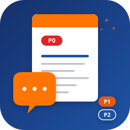
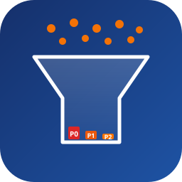

3 个方向，主色 #1E53A4（深蓝），强调色 #FF7400（橙），SVG 矢量，256×256。

左下橙色气泡（3 个白点代表访谈记录）→ 右上白色文档（带 P0 红标 + 顶部橙色色条）。
最直观体现 skill 核心动作：「访谈记录 → 结构化报告」。P0 标签暗示优先级矩阵能力。

顶部散点（访谈记录）→ 中间漏斗（归纳过滤）→ 底部 P0/P1/P2 三色柱（优先级排序）。
体现「从大量访谈提炼洞察 + 量化优先级」的方法论，但偏抽象。
背景白色文档（横线代表内容）+ 右下橙色放大镜（镜内有感叹号代表洞察）。
调研/洞察隐喻，识别度高，但与"调研"通用图标重合度大。
inkscape / 在线工具把 SVG 导出，或我用 cairosvg 帮你转。~/.claude/skills/research-report-generator/assets/logo-{a,b,c}-*.svg